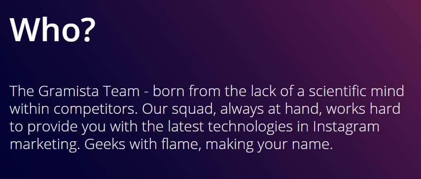
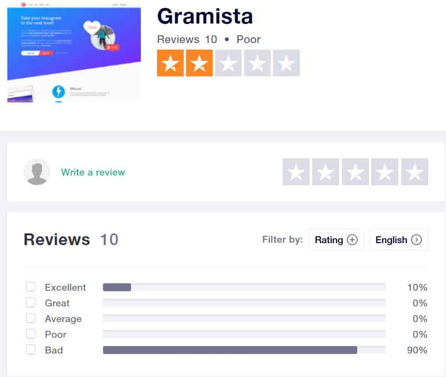
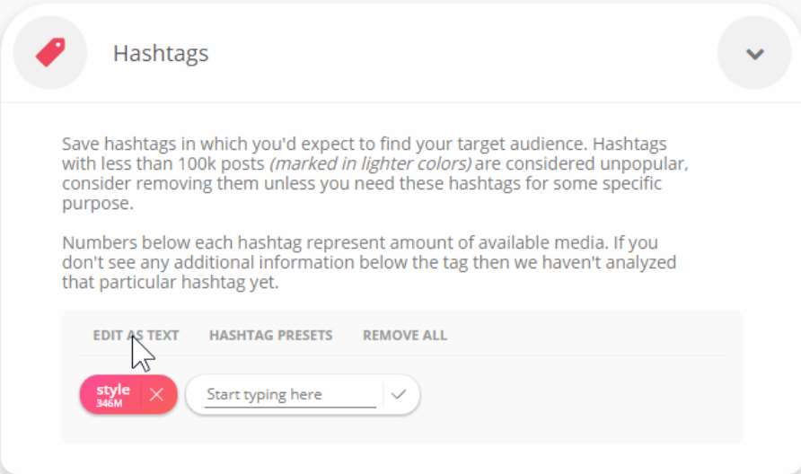
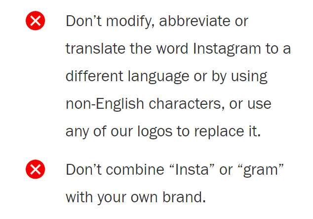

Is Gramista worth it? Read this Gramista review to learn if this tool is worth your time and money.Gramista claims to take your Instagram to the next level by automating activity on your account. It claims to be the absolute best Instagram bot out there.
In this review we’ll be covering a number of topics, such as: it’s price, safety, effectiveness, if it’s user friendly, and if there are any better alternatives out there.
Ready to know how this tool works?
Let’s get started.
What is Gramista?

Gramista is an Instagram tool designed to automate activity on your account. It automates a number of actions, saving you a lot of time in the long run.
What this tool does is automate the tedious tasks such as Liking content and following profiles, allowing you to focus on other areas of your social media business.
How Gramista Works
Gramista is a little different than most Instagram bots. The system is based on the human curiosity and reciprocity. In simple terms, the tool is built on people’s need to return the favor.
For example, when you like someone’s post on Instagram, they’ll probably return the favor by liking one of your posts. Gramista aims to send out a lot of these little pings, in the form of likes and follows, in hopes that the target profiles will do the same. As it turns out, most people will return the favor.
Their core service is called “Liker” which is based on this principle.
(Kicksta uses a similar service, read our Kicksta review here)
On that note, Gramista doesn’t straight-up spam profiles will comments, likes, messages, and all sorts of actions. It uses calculated algorithms to simulate human behavior, not spam. It’s important to understand the difference. There’s a mode called Smart Mode that uses AI to simulate human actions.
Of course, a lot of Instagram bots make the same promises.
Does this one really work?
Do You Have to Download Gramista?
I understand downloading Instagram tools can be bothersome. The good news is Gramista works completely in your web-browser, and you don’t have to have the window open for it to work.
No need to download and install any programs. It makes things a lot easier because you don’t have to worry about virtual private servers and what not.
You’re probably wondering:
What are Gramista’s Prices?

Gramista uses an interesting pricing structure. Instead of the usual monthly subscriptions, Gramista has a wide range of time-based single packages.
Here’s the list of packages:
- 1 Day – $1.79
- 3 Days – $4.99
- 7 Days – $10.99
- 30 Days – $39.99
- 60 Days – $64.99
- 90 Days – $89.99
Does Gramista Have a Free Trial?
The good news is Gramista does offer a free trial, although it’s not as long as other Instagram tools. With Gramista, the free trial lasts for 12 hours, and the countdown starts as soon as you link your Instagram account.
There’s also the option to buy a one or three day package, which is usually enough to test out the tool and see if it works. The one day package is essentially a free trial because it only costs $1.79.
The Public Opinion
Before I get into the tool’s features, I wanted to take a moment to share the internet’s opinion of Gramista.
Taking a look at their Trust Pilot page, the reviews don’t look good. It has a two out of five star rating with 90% of users rating it Bad or one star.

Granted, at the moment, there are only 10 reviews on that page. Nevertheless, it’s clear the tool doesn’t have the best reputation online.
On that note, the Trust Pilot page hasn’t been claimed by the company either, so it’s unclear if they even care about their online reputation.
We’ll discuss the possible reasons for the negativity later on in the cons section of this Gramista review.
Now let’s move on to Gramista’s features:
Gramista’s Features
Gramista automates three actions: Likes, Follows, and Unfollow (the last two are bundled together).
Note: The Liking service is called “Liker”.
These two services can be toggled on and off in the main dashboard, and you can also set the desired speed (Slow, Normal, and Fast).
What Liker does is what you imagine, it likes a wide range of content that falls within the parameters you specify with the target filters.
When used with appropriate targets, this service is supposed to be enough to quickly boost your Instagram audience. There are also a couple other features, such as Boost and Smart Mode.
Note: Speaking of likes, wondering how to get more likes on Instagram?
Before you start using these services, you’ll want to set up a target audience.
Targeting Options

With Gramista, there are three ways to target profiles: Hashtags, Usernames, and Locations.
Almost everyone adds hashtags to their new posts, so that’s one way to find plenty of content. The Username filter will interact with the followers of a target username, instead of that specific username. It’s a good way to keep up with your competition.
And Location works as you would imagine, a decent filter for building local brands and what not. There’s also filter for Gender, as well as blacklists.
Once you setup accurate and specific targets, the only thing left to do is enable the services. Gramista will take it from there, and the Liker tool will start liking all the content related to your targets.
And the follow and unfollow tool will quietly work in the background.
Follow & Unfollow
At Gramista, these two are bundled together,and run automatically in user-specified cycles. You can choose to run this service in Smart Mode, which is a recommended option, enabled by default.
The Smart Mode is an anti-spam filter mode. It basically creates random patterns for the scripts, instead of running them all in a row, which is easy for Instagram to detect. It also remembers which accounts you followed with the tool so you don’t keep interacting with the same accounts, not to mention a few other behind-the-scenes tasks.
The Smart Mode service works in cycles, following a batch, and then unfollowing the people who don’t follow back. An interesting feature is you can manually change the cycle periods in the settings menu, although the default settings are usually enough.
Cycles are basically limits. I always recommend keeping the bot limits as low as possible, at least as first. It’s better to be on the safe side. The default value for the cycles is 1,000 users but I recommend lowering it 100 or even lower.
Better safe than sorry!
What About Boost?
Boost is a service that does exactly what you would expect. It basically adds a quick injection of likes and activity to improve exposure on your posts.
It’s an optional service. And only recommended for older accounts. The good news is it can’t be enabled all the time, it only runs for 1 – 2 hours, and then has a 24 hour cool-down period before you can use it again.
Now that you have a basic idea what this tool can do, let’s run through the pros and cons.
Gramista Review: Pros & Cons
Let’s start with the pros.
Simple & User-Friendly 👍
One thing I really liked about this tool is the simplicity. There are really only two main services you need to know about, and you don’t need to manually input any limits or settings.
The default settings are usually good enough to start with. Basically, the only thing you need to do is sign-in with your Instagram account and toggle the two services. That’s it. Very easy to use.
It’s also web-based.
Budget-Friendly & Flexible Packages 👍
I’ll admit, the team at Gramista made their packages extremely accessible. There packages for people on a tight budget as well as for people working with more substantial funds.
What I really liked is not only can you sign-up for a 12-hour free trial, but you also buy short periods of time, such as one day, or three days, for only a few dollars. Very nice.
On the subject of prices, their refund policy is they do not entertain refund requests unless there is clear evidence that the tool is not working as promised. In other words, if you have an account and everything is working fine, they won’t give you a refund.
Not Too Aggressive 👍
Although the tool does have the Boost mode, it has a cool-down timer, so it can’t be overused. I liked how Gramista has a lot of anti-spam filters in place, which may be why they’re service is still operational when many similar companies are going down.
Their core service is based on liking content, that’s it. Actually, the following service is completely optional. As we know, Instagram won’t ban you for liking too much content.
So for those of you who are wondering if Gramista is safe, I have to say it looks quite safe to me. They also have a sleep mode which shuts the scripts off during the night-time in whichever timezone you select.
It’s probably one of the safer Instagram manager tools out there.
Recent Activity Feed 👍
Wondering what the tool is doing behind the scenes? In the dashboard you can find a Recent Activity feed that will show a real-time action-feed of your account.
For example, it shows who the bot followed, what content it liked, if it’s taking a break, and what not. A great way to keep an eye on your activity!
Not a Great Reputation Online 👎
It’s clear the company doesn’t have a great reputation online.
I wasn’t able to find their official Instagram account, and their Twitter page hasn’t been updated in over two years. Speaking of their Twitter, there are a lot of people complaining on Twitter, but Gramista hasn’t even replied to any of them.
Combine that with the fact that they aren’t trying to claim the Trust Pilot page and resolve the complaints is a little suspicious to me. I don’t know what’s going on. But it looks like they’re not too concerned with their reputation.
Also their blog is updated once every few months:
It looks like their customer service in general is rather slow. Most of the people who complain about their customer service said they emailed the team multiple times and never got a response.
Uses “Gram” in Their Name 👎
Although not a major deal breaker, many similar tools have been shutdown for using words that Instagram has trademarked.
Take a look at this screenshot taken from Instagram’s brand policies:

It’s a matter of time before Instagram get on their case about it. If that happens, you can be sure they’ll shutdown instantly, taking your campaigns with them.
Unreliable 👎
It looks like a lot of people have encountered this issue. From what I can tell, the tool works great for the first few days, and then the performance starts going downhill, sometimes stopping completely. It’s frustrating to pay for a tool the stops working after a few days.
It looks like the activity can stop randomly and there’s no way to get it started again, even after contacting their support team. In short, when it works, it works good. But it doesn’t always work.
Gramista Review Conclusion: Any Alternatives?
Overall, I think Gramista is an okay tool. The Liker service is interesting enough and has potential. But I don’t get a good feeling from their customer support and it looks like a lot of people are running into issues with the tool. At the moment, I feel like Gramista is not good enough to recommend. Unfortunately, we don’t recommend it.
Alternatives
We won’t leave you hanging here. There are plenty of other Instagram managers that we do recommend, two of which are listed below:
Kenji
Kenji is a great little Instagram bot. It’s budget-friendly, fast, and safe. What more could you want? They also have a three day trial you can take advantage of without entering your credit card information.
Upleap
Now Upleap is a little pricier because it’s not – technically – a bot. Upleap hires actual social media managers to take over your accounts and automate activity. It’s a really cool platform, that’s for sure. And you can also try it out for three days, for free, without any credit card details.
Thanks for taking the time to read this Gramista review! Hopefully now you have enough information to make the best decision for your business.


1 Comment